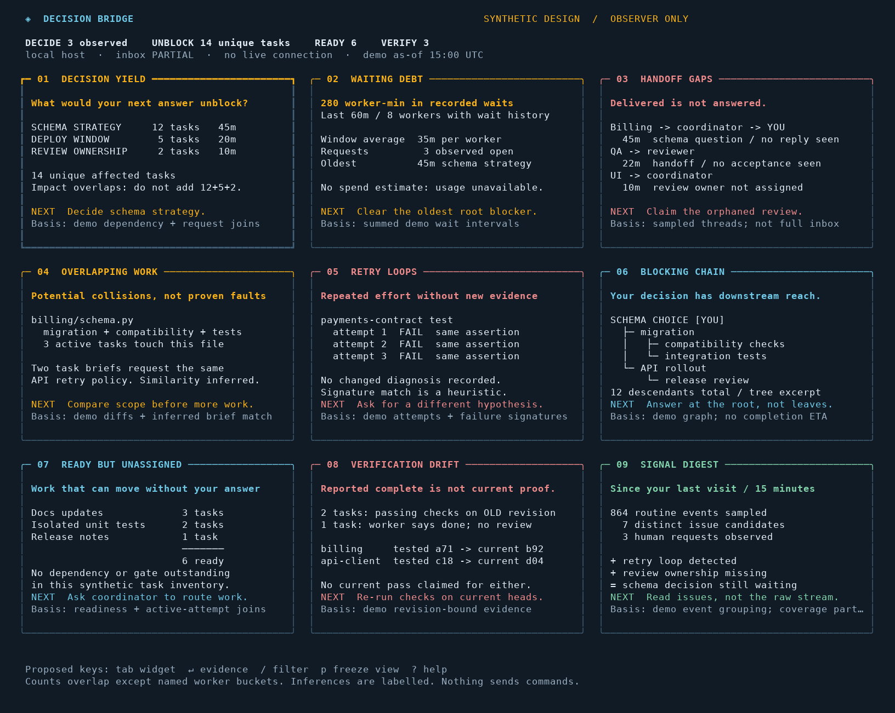
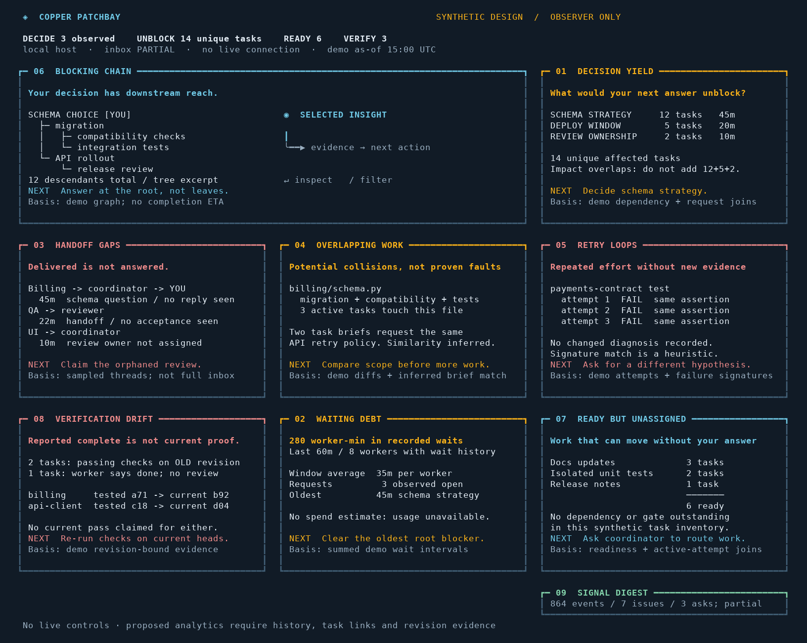
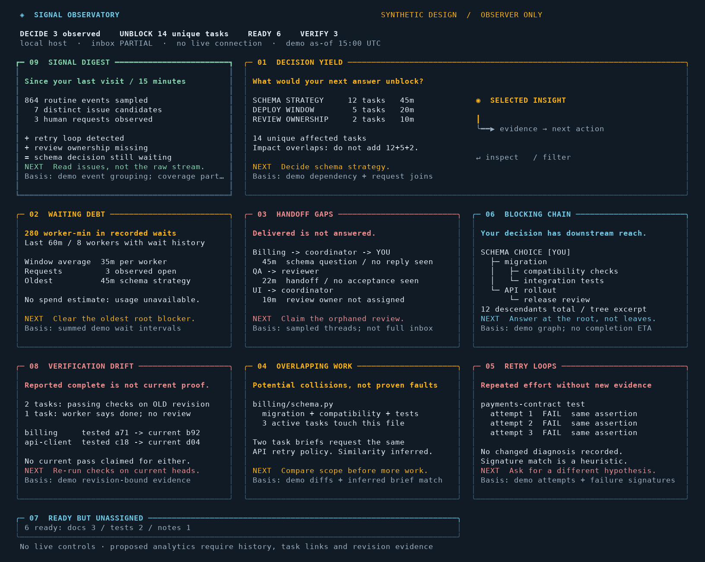
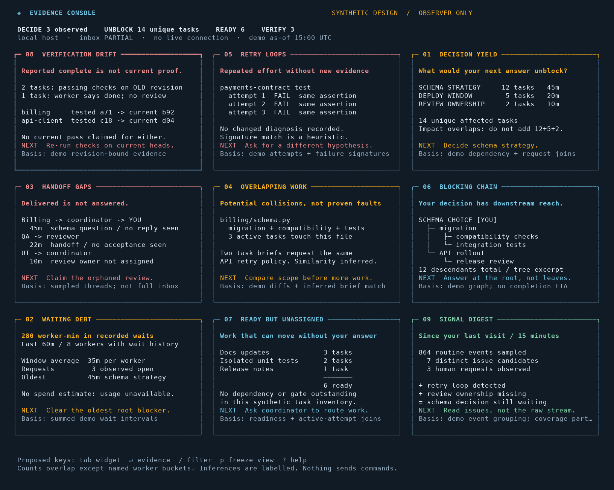
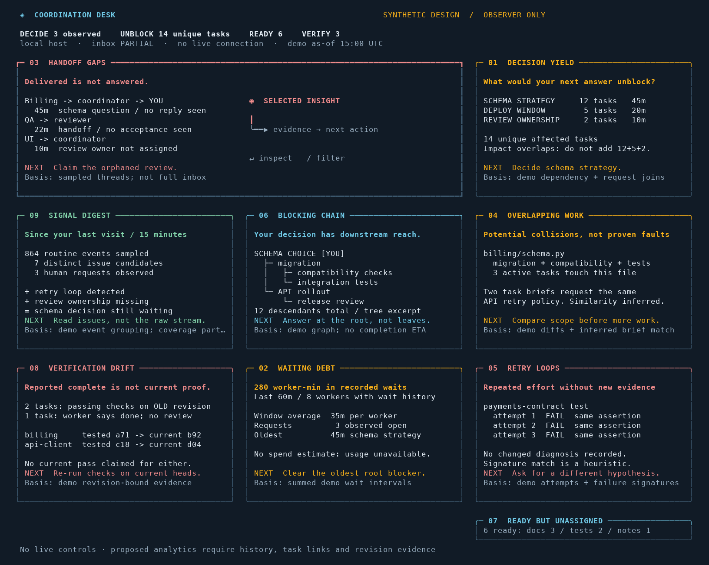
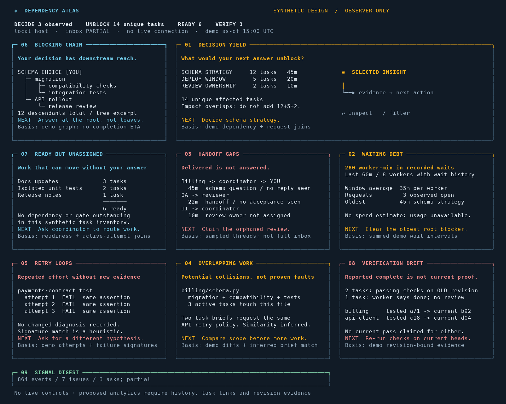
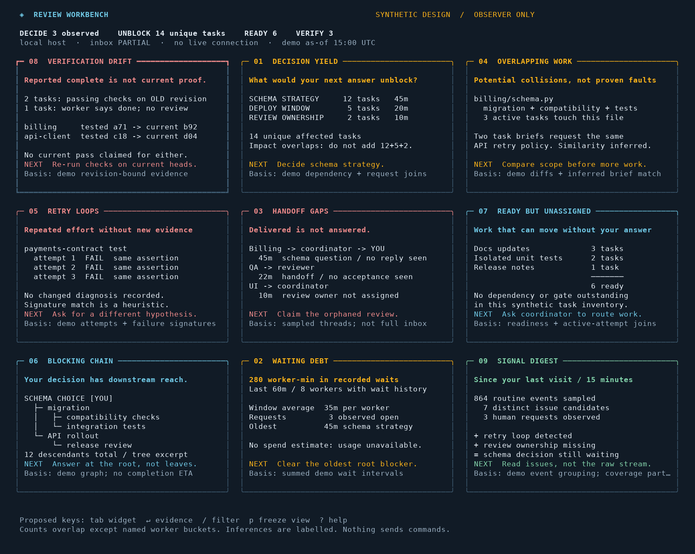
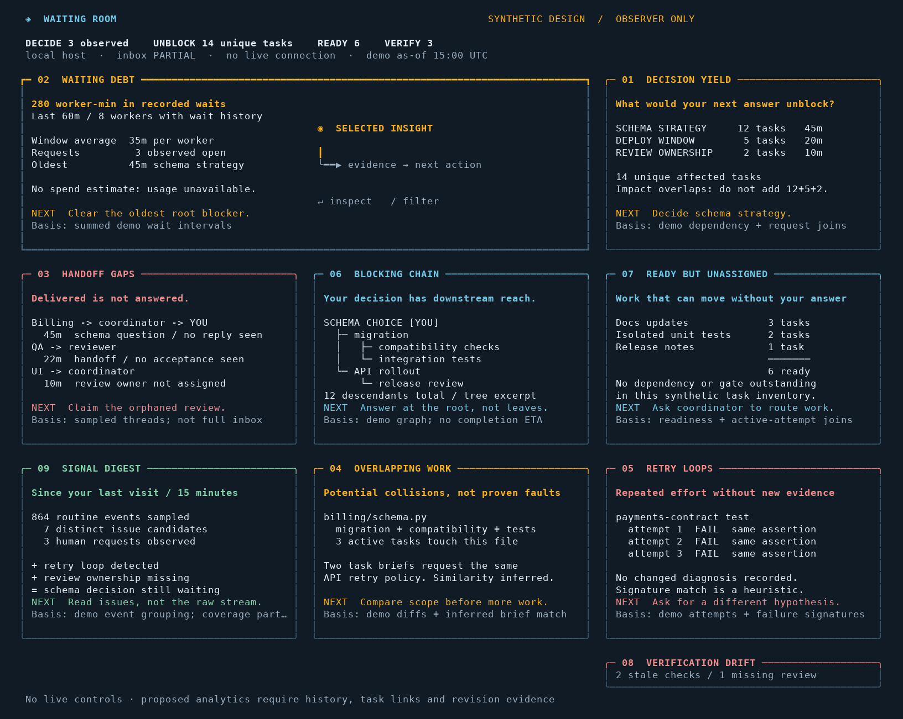
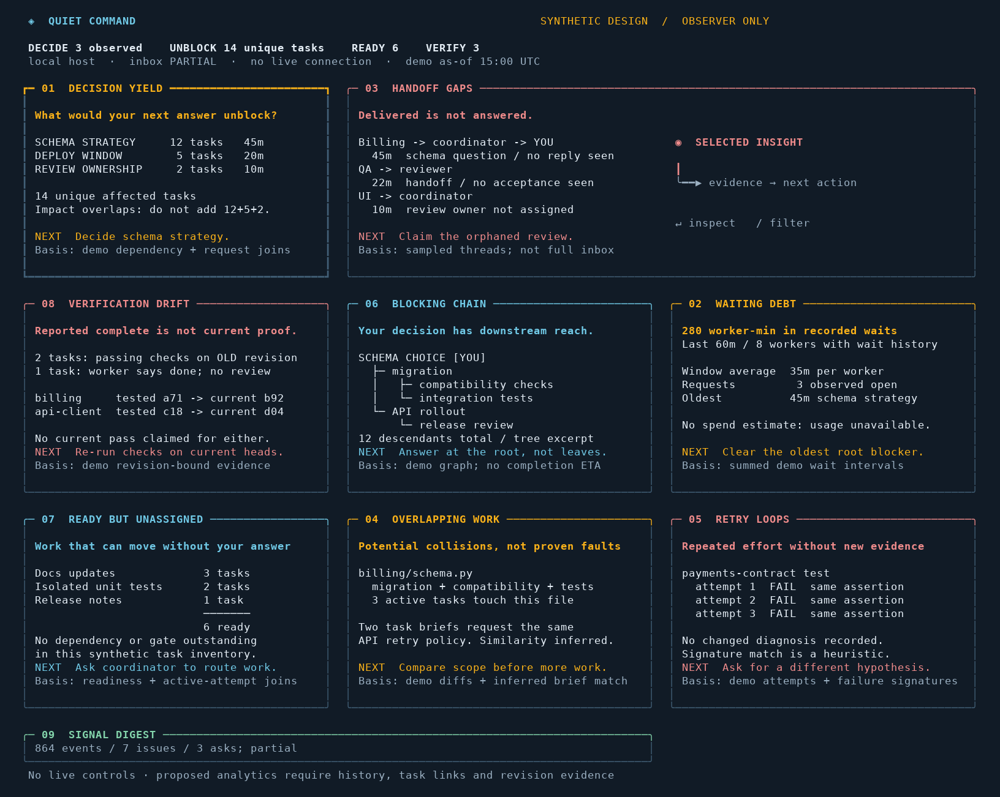
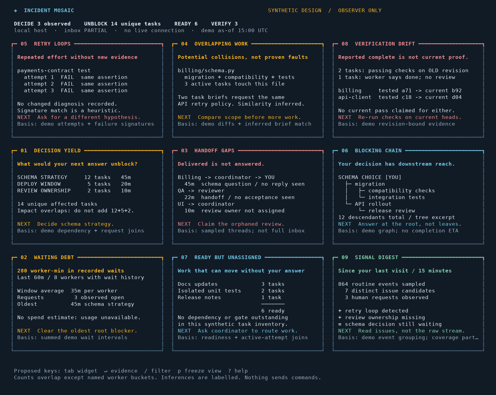

Coordination Instruments
Nine analytical widgets per screen, 144 terminal columns, real color. These compositions prioritize cross-run decisions, handoff failures, overlapping work, repeated failures and revision-bound verification rather than reproduce a session inventory.
SYNTHETIC DESIGN ONLY. No live Orca connection. These analytics are proposed, not verified missing Orca features. They require task dependencies, message history and check evidence that may not currently be fully available. Ten arrangements share three panel geometries; they are not ten implemented applications.
1. Decision Bridge
Balanced nine-widget view. Answer the highest-impact question, then inspect coordination problems.

Truecolor ANSI source2. Copper Patchbay
Large causal-chain panel with a decision rail and compact supporting instruments.

3. Signal Observatory
Elevates the meaningful-change digest and the next useful human decision.

4. Evidence Console
Revision drift and repeated failures lead; worker claims are not treated as proof.

5. Coordination Desk
Handoff gaps receive the large panel; ownership and answer state stay distinct.

6. Dependency Atlas
Highlights blocked descendants and work that can still move independently.

7. Review Workbench
Current revision evidence beside potential overlap and duplicate scope.

8. Waiting Room
Recorded waiting intervals and the unanswered decisions behind them.

9. Quiet Command
Large communication context with supporting evidence and unassigned work.

10. Incident Mosaic
Retry loops, collisions and stale checks occupy the first row.

Previewed locally as generated images. No application runtime, keyboard interaction or real-data correctness has been tested. Proposed key hints are illustrative only.